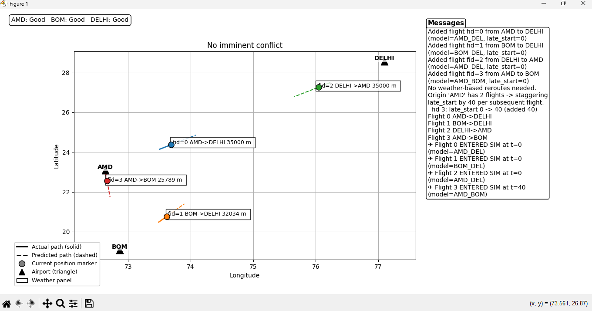

AI-Powered Air Traffic Collision Avoidance Simulator
Tech Stack: Python, TensorFlow/Keras, Tkinter, NumPy, Pandas, Matplotlib, Scikit-learn/Joblib
- Built a desktop simulator that models multiple flights between airports (AMD, BOM, DELHI) and predicts aircraft trajectories using LSTM-based time-series models.
- Implemented real-time conflict detection and automatic altitude-change strategies, including smooth restoration to original cruise and descent profiles for safe landings.
- Designed an interactive GUI to add flights, set airport weather conditions, visualize paths on a map, and display live log messages for reroutes, cancellations, and landing events.